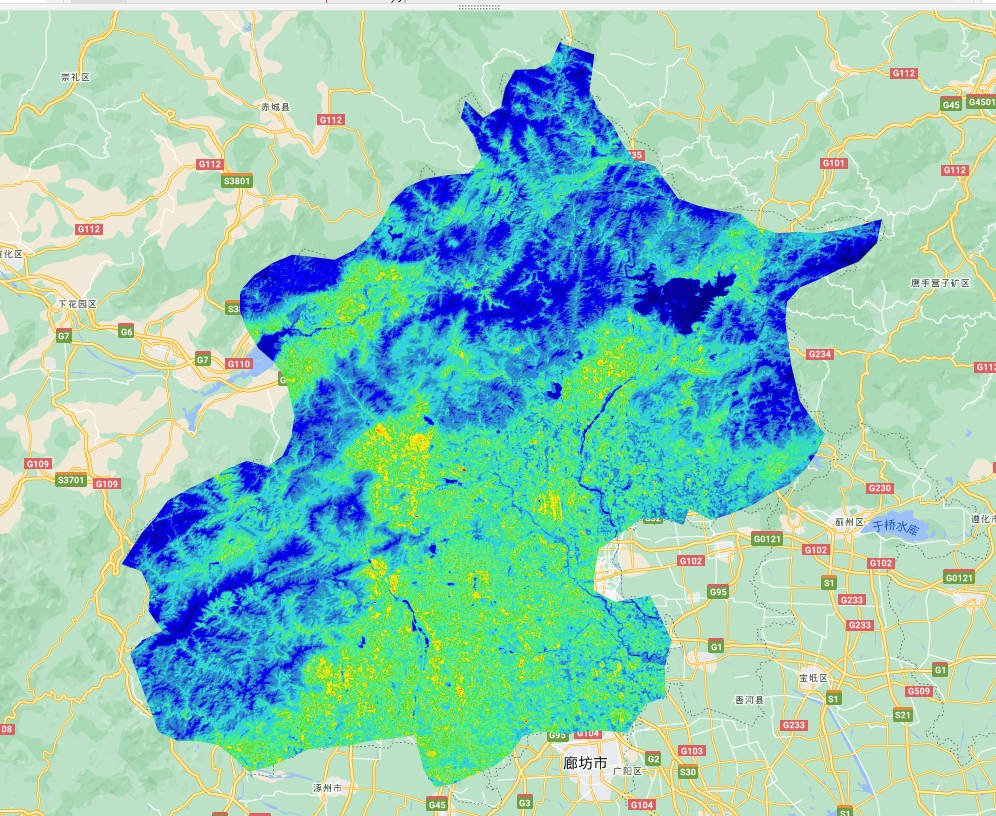
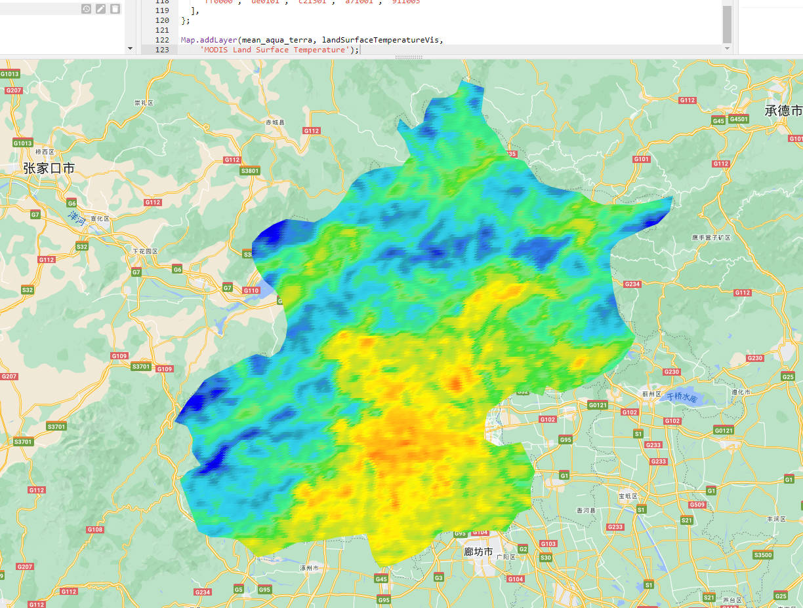
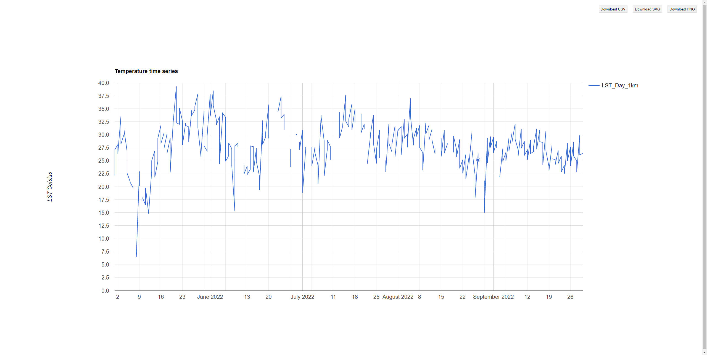
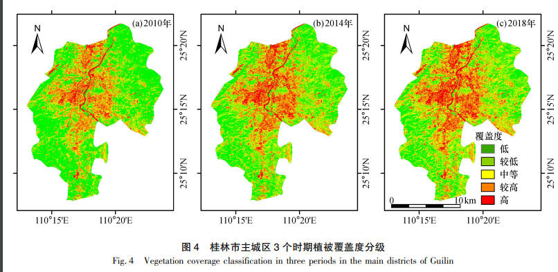

8 Temperatrue
8.1 Summary
This week mainly focus on temperature and policy, and urban heat island(UHI) issue is posed at the very beginning, whose definition is certain spots in a city are much more hotter with higher temperature than the surrounding environment due to a series of complex human activites, like carbon dioxide emission, polution, factory operation, etc. Two main direct causes of UHI coule be:
- More dark surfaces that retain heat
- Less vegetation that cools the environment
UHI hurt human being in three aspects:
- Social damage
- Environmental damage
- Economic damage
Fortunately, global policies targeting at addressing the UHI issue has been proposed, it is covered from “New Urban Agenda” to “SDGs”. However, local policies also are needed to be made to response this issue from realistic and practical level, here are some examples:
- Barcelona Superblocks
- Medellín Green Corridors
- Sydney’s western suburbs
We already know it’s an serious issue we can’t neglect, then what exactly do we set up every step? More specifically, what can city do based on the data they have? Take Fremantle for example, they use Landsat temperature image data(they believe) from one day in a month, with a 30m resolution, here is what this city would like to achieve:
Maintain and enhance vegetation
Increase quantity and distribution of green areas/tress (20% canopy coverage)
Encourage greening of hard surfaces (e.g. parking) and in private realm
First city to use data to inform their cooling / greening strategy
With all the data and policies, it seems that this issue could be adressed easily, however, during the procesure, there are usually full of misconducts, which are mainly related to inequality, like do we take measures equally and equitably?
For the practical, we can apply Landsat data to plot a mean summer temperature image, take Beijing for example:

This can also be done using Modis satellite products:

We can see the difference bewteen these two plots is the latter is more vague not as clear as the first plot, this is because the resolution modis have is 30m scale while the Landsat has 10m scales. But Modis have more images in a certain period of time, which provide us with the chance to do a time-series analysis.

This enables us to do more mathmatical calculations since we have this two dimension expression of data.
8.2 Application
Taking the main urban area of Guilin city as the research area, Peiqing Jiang(2020) used the random forest algorithm to classify the Landsat remote sensing images in 2010, 2014 and 2018 based on GEE, and used the single-window algorithm to invert the surface temperature. The results showed that: 2010—2018 The average temperature in the main urban area of Guilin City showed an upward trend in 2010, with a total increase of 1.29 ℃ in 8 years, and the temperature zones of each level changed from lower temperature zone, low temperature zone and medium temperature zone to high temperature zone and higher temperature zone; lower temperature zone and low temperature zone is mainly distributed in areas covered by vegetation and water bodies, while the medium temperature area, high-temperature area, and higher temperature area are mainly distributed in construction land and unused land-covered areas. The following figure is the LST results from three different year:

Source:Wanfang
Actually I have one doubt about this article which is the colleting time of the image data, if collected in different time, data analysis is not convincing to readers and the public. If it needs to calculate the mean temperatrue of the whole year, it has to be mentioned, which I don’t see in this article. Maybe it can be more clear about when the data is collected and specify the time they use for analyzing.
8.3 Reflection
Using GEE, we can quickly find the temperature product from different satellite sources, like Landsat or Modis. Despite they may have different resolution, it still gives us the oppotunity to analyze issues under the various situations the city are facing. Sadly, there is no satallite that can produces consistent temperature products with precise resolution so far, the best satellite now is Sentinel-5P, which still can’t meet the needs of deeper temporal analysis. However, what’s good is algorithms can be easily conduct through a rows of codes and it won’t cost us too much time, which is really fascinating.
8.4 Reference
Peiqing Lou, Bolin Fu, Hongchang He et al(2020). Quantitative remote sensing analysis of thermal environment changes in the main urban area of Guilin based on GEE[J]. Journal of Guilin University of Technology,2020,40(2):330-337. DOI:10.3969/j.issn.1674-9057.2020.02.010.